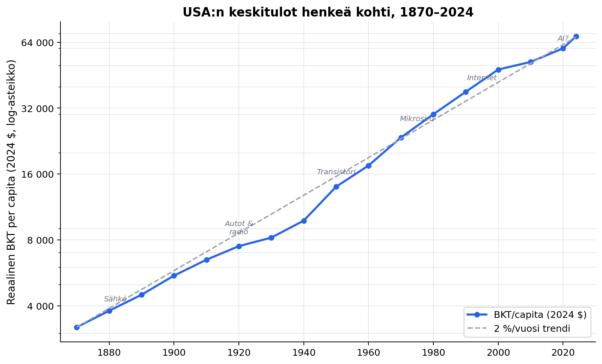
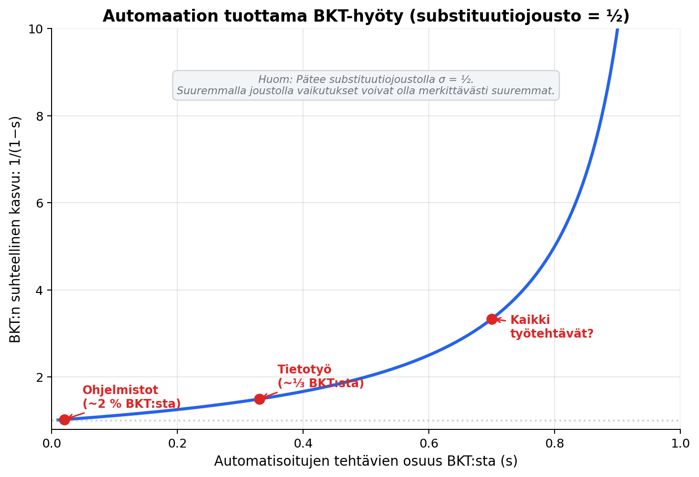

Vasta singulariteetin alkuvaiheita
Elon Musk kirjoitti helmikuussa 2026 olevamme “singulariteetin hyvin varhaisessa vaiheessa”. Samoihin aikoihin Andrej Karpathy kuvaili autonomisten LLM-agenttien verkostoa — noin 150 000 agenttia jaetulla scratchpadilla — kokeiluna, joka on vielä teknisesti sekava mutta mittakaavaltaan poikkeuksellinen.
Singulariteetti-termiä käytetään kuitenkin useassa eri merkityksessä:
- Taloudellinen singulariteetti tarkoittaa tilannetta, jossa talouskasvu kiihtyy rajatta pääoman korvatessa työpanosta yhä laajemmin (Nordhaus, 2021).
- Teknologinen singulariteetti viittaa pisteeseen, jossa tekoäly kykenee rekursiiviseen itseparannukseen ja ylittää inhimillisen älykkyyden.
- Yhteiskunnallinen singulariteetti kuvaa laajempaa murrosta, jossa työn merkitys, tulonjako ja ihmisen rooli muuttuvat pysyvästi.
Käsitteet liittyvät toisiinsa, mutta eivät ole identtisiä. Teknologinen läpimurto ei automaattisesti johda taloudelliseen singulariteettiin, koska diffuusioviiveet, instituutiot ja tuotannon pullonkaulat suodattavat teknologian vaikutuksia. Tarkastelu keskittyy tässä taloudellisen ja teknologisen singulariteetin rajapintaan: mitä kasvuteoria ennustaa ja miten nämä ennusteet suhteutuvat nykyiseen teknologiseen kehitykseen.
Nordhaus: singulariteetti ei näy datassa
William Nordhaus analysoi vuonna 2021 taloudellisen singulariteetin mahdollisuutta kasvuteorian näkökulmasta. Keskeinen kysymys on substituutiojousto informaatiopääoman ja muiden tuotantopanosten välillä. Jos informaatio voi korvata työtä ja fyysistä pääomaa laajasti, kasvu voi kiihtyä rajatta. Jos substituutio on rajallista, teknologinen kehitys ei muuta pitkän aikavälin kasvuvauhtia olennaisesti.
Nordhaus tunnistaa kolme mahdollista mekanismia. Ensimmäinen on tekoälyn kiihdyttämä teknologinen innovaatio, jossa koneet suunnittelevat uusia tuotantoprosesseja. Hän pitää tätä mahdollisuutta liian spekulatiivisena empiiriseen arviointiin. Toinen liittyy kulutusrakenteeseen: jos kulutus siirtyisi nopeasti halpeneviin informaatiotuotteisiin, kokonaiskasvu voisi kiihtyä. Empiirinen näyttö ei tue tätä. Kolmas mekanismi on pääoman syveneminen: jos informaatiopääoma korvaa työvoimaa riittävän joustavasti, pääoman tulo-osuus kasvaa ja kasvu nopeutuu.
Nordhaus testasi hypoteesia useilla Yhdysvaltojen taloutta kuvaavilla indikaattoreilla, kuten substituutiojoustolla, tuottavuustrendillä ja pääomatulo-osuudella. Suurin osa tuloksista ei tukenut singulariteettia. Positiiviset signaalit viittasivat korkeintaan hyvin pitkän aikavälin mahdollisuuteen.
Keskeinen johtopäätös on, että laskentatehon nopea kehitys ei automaattisesti muutu kokonaistalouden kasvuksi. Tuotanto edellyttää edelleen energiaa, materiaaleja ja fyysisiä prosesseja, joiden tehokkuus kehittyy hitaammin.
Jones: pullonkaulat kesyttävät kasvuräjähdyksen
Charles I. Jones esittää tuoreemmassa analyysissaan kaksi ääriskenaariota: tekoäly voi joko kiihdyttää kasvua merkittävästi tai jatkaa historiallista noin kahden prosentin kasvutrendiä uutena yleiskäyttöisenä teknologiana.

Jones ja Tonetti (2026) rakentavat Acemoglun ja Restrepoin (2018) tehtäväpohjaisen automaatiokehikon päälle, jossa työpaikat koostuvat heterogeenisista, toisiaan täydentävistä tehtävistä. Heidän weak links -kehikkonsa lähtee ajatuksesta, että kokonaistuotanto määräytyy heikoimman lenkin mukaan.
Ilmiö on tuttu taloustieteessä Baumolin tautina: palvelusektorin hinnat nousevat suhteessa teollisuuteen, koska palvelutehtävien tuottavuus kasvaa hitaammin. Weak links -kehikossa sama logiikka yleistyy — hitaimmin automatisoituvat tehtävät määräävät kokonaiskasvun tahdin.
Tulokset riippuvat ratkaisevasti substituutiojoustosta. Jos tehtävät ovat vahvoja komplementteja, yksittäisen sektorin automaatio vaikuttaa vain rajallisesti kokonaistuotantoon. Jos substituutio on joustavampaa, vaikutukset voivat kasvaa huomattavasti. Todellinen talous sijoittuu näiden ääripäiden väliin, eikä tarkkaa arvoa tunneta.

Jones ja Tonetti (2026) päätyvät mallissaan tilanteeseen, jossa kasvu kiihtyy, mutta hitaasti. Automaatio leviää aluksi rajatulle tehtäväalueelle, ja vasta laaja diffuusio muuttaa kasvuvauhtia selvästi. Pullonkaulat eivät estä nopeampaa kasvua, mutta tekevät siitä asteittaisen prosessin.
Jones tarkastelee myös riskejä. Hyöty-riskilaskelmat viittaavat siihen, että merkittäväkin kasvupotentiaali ei automaattisesti oikeuta suuria eksistentiaalisia riskejä, koska lisäkulutuksen rajahyöty on korkeilla tulotasoilla suhteellisen pieni.
Jones kuvaa AI-kilpajuoksun dynamiikkaa vangin dilemmana. Jokainen AI-laboratorio ajattelee, että muut kilpailevat joka tapauksessa: hidastaminen ei vähennä riskejä mutta voiton mahdollisuus menetetään. Tasapaino on, että kaikki kilpailevat, vaikka kaikki hyötyisivät hidastamisesta. Ratkaisuksi Jones ehdottaa veroa GPU- ja TPU-siruille, mikä hidastaisi kilpailua ja rahoittaisi turvallisuustutkimusta samanaikaisesti.
Teknologinen etulinja
Arviot tekoälyn koulutuksessa käytetyn efektiivisen laskennan kasvusta viittaavat erittäin nopeaan panosten kasvuun: Epoch AI:n (2025) kokoaman datan mukaan koulutukseen käytetty laskentateho on kasvanut noin 4–5 kertaluokkaa vuosikymmenessä. Samoin ohjelmistotehtäviä mittaavat benchmarkit osoittavat mallien suorituskyvyn parantuneen nopeasti — METR:n (2025) pitkäkestoisten tehtävien mittauksissa mallien suorituskyky on karkeasti kaksinkertaistunut noin seitsemän kuukauden välein. Nämä mittarit kuvaavat kuitenkin teknistä kyvykkyyttä, eivät suoraan taloudellista tuottavuutta. Benchmark-suorituskyvyn eksponentiaalinen kasvu ei välttämättä tarkoita vastaavaa kasvua taloudellisessa arvonluonnissa.
Arviot tekoälyn koulutuksessa käytetyn efektiivisen laskennan kasvusta viittaavat erittäin nopeaan panosten kasvuun. Samoin ohjelmistotehtäviä mittaavat benchmarkit osoittavat mallien suorituskyvyn parantuneen nopeasti. Nämä mittarit kuvaavat kuitenkin teknistä kyvykkyyttä, eivät suoraan taloudellista tuottavuutta. Benchmark-suorituskyvyn eksponentiaalinen kasvu ei välttämättä tarkoita vastaavaa kasvua taloudellisessa arvonluonnissa.
Rekursiivisen itseparannuksen mahdollisuus — tekoäly, joka auttaa kehittämään parempaa tekoälyä — muodostaa teoreettisesti merkittävän mutta edelleen epävarman kehityspolun.
Tulkinta
Nordhausin, Jonesin sekä teknologia-alan toimijoiden näkemykset eivät ole keskenään ristiriidassa, vaan painottavat eri aikahorisonteja. Empiirinen makrodata ei vielä osoita singulariteettia. Samalla teknologinen kehitysvauhti on selvästi kiihtynyt. Pullonkaulat ja diffuusioviiveet selittävät, miksi nämä havainnot voivat olla yhtä aikaa totta.
Lisäksi tehtäväkenttä ei ole vakio. Automaatio muuttaa sitä, mitä taloudessa tuotetaan ja missä ohjelmistoja käytetään. Talouden rakenne mukautuu teknologian mukana, mikä tekee pitkän aikavälin vaikutuksista vaikeasti ennustettavia.
Dario Amodei (2024) edustaa optimistisempaa tulkintaa: hänen mukaansa tekoälyn hyödyt — lääketieteessä, koulutuksessa ja tieteellisessä tutkimuksessa — voivat realisoitua nopeasti, jos teknologian käyttöönottoa ei hidasteta tarpeettomasti. Tämä näkemys olettaa lyhyitä diffuusioviiveitä ja nopeaa institutionaalista sopeutumista — juuri niitä oletuksia, joita Nordhausin ja Jonesin analyysit kyseenalaistavat. Samalla riskit kasvavat teknologisen kapasiteetin mukana. Taloudelliset hyödyt ja turvallisuuskysymykset kietoutuvat toisiinsa tavalla, jota perinteinen kasvuteoria on käsitellyt vain rajallisesti.
Johtopäätös
Taloustieteen näkökulmasta lopputulos on avoin. Tekoäly voi kiihdyttää kasvua merkittävästi tai jatkaa historiallista kehityspolkua ilman pysyvää kasvuvauhdin muutosta. Molemmat vaihtoehdot ovat yhteiskunnallisesti merkittäviä.
Teknologinen etulinja näyttää nopean muutoksen, mutta koko talouden tasolla vaikutukset määräytyvät täydentävyyksien, pullonkaulojen ja institutionaalisen sopeutumisen kautta. Historiallisesti monet mullistavat teknologiat ovat muuttaneet talouden rakennetta ilman pysyvää kasvuvauhdin muutosta. Tekoäly voi muodostaa poikkeuksen, mutta sen osoittaa ajan myötä kertynyt data, ei yksittäiset havainnot tai julkiset lausunnot.
Lähteet:
- Acemoglu, D. & Restrepo, P. (2018). “The Race between Man and Machine: Implications of Technology for Growth, Factor Shares, and Employment.” American Economic Review, 108(6), 1488–1542.
- Amodei, D. (2024). “Machines of Loving Grace: How AI Could Transform the World for the Better.” darioamodei.com.
- Epoch AI (2025). “Data on AI Models.” epochai.org.
- Jones, C.I. (2024). “The AI Dilemma: Growth versus Existential Risk.” American Economic Review: Insights, 6(4), 575–590.
- Jones, C.I. (2025). “How Much Should We Spend to Reduce A.I.’s Existential Risk?” NBER Working Paper 33602.
- Jones, C.I. (2026). “A.I. and Our Economic Future.” Tulossa Journal of Economic Perspectives -lehdessä.
- Jones, C.I. & Tonetti, C. (2026). “Past Automation and Future A.I.: How Weak Links Tame the Growth Explosion.” Julkaisematon käsikirjoitus.
- METR (2025). “Measuring AI Ability to Complete Long Tasks.” metr.org.
- Nordhaus, W.D. (2021). “Are We Approaching an Economic Singularity?” American Economic Journal: Macroeconomics, 13(1), 299–332.
- Musk, E. & Karpathy, A. (2026). X/Twitter-keskustelu, helmikuu 2026.